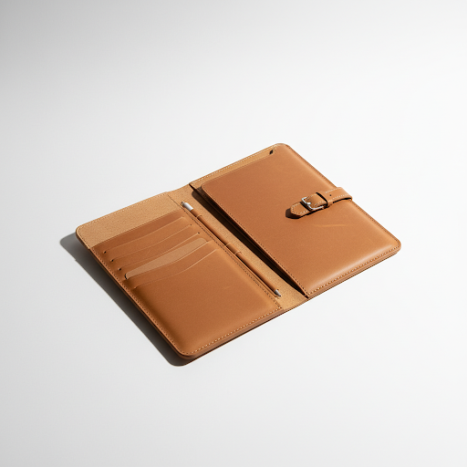
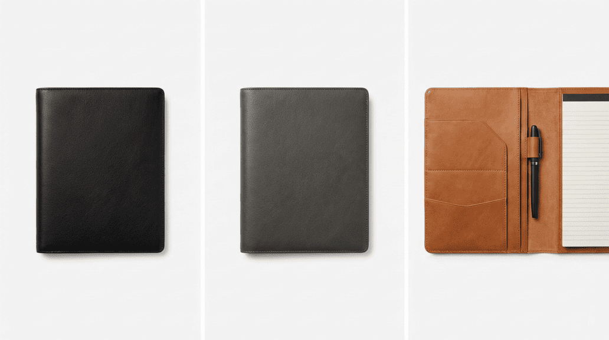
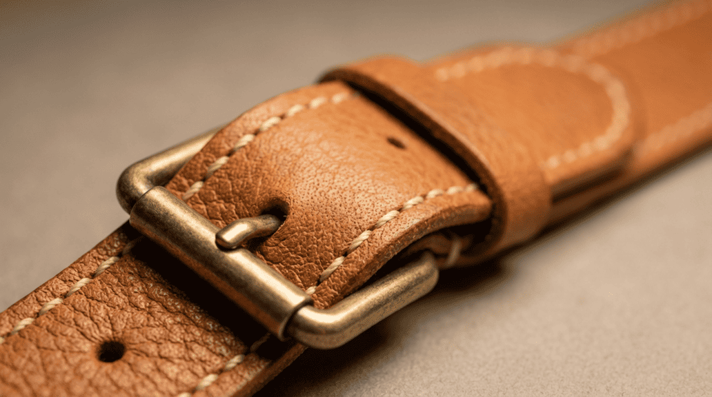

New
The Tarrant — Origin
Hand-stitched leather carry organiser.
Three colourways. One purpose.
From $599 AUD
DiscoverThe Tarrant Collective
A new kind of
everyday essential.
Slim, deliberate, and precisely engineered. It holds every essential a modern professional carries, and turns over to become a flat working surface.



01 — Engineered
Moulded pocket
architecture.
Not just stitched leather. A precision-engineered carry system that holds laptop, stylus, phone, AirPods, charger, keys, and glasses.
See what fits02 — Dual purpose
Carry organiser.
Work surface.
Turns over to become a flat working surface. One object, two modes. Designed for the intentional professional.
See the reversal

03 — By hand
Every stitch
placed by hand.
Full-grain leather construction. Contrast thread detail on darker colourways. No machines. No shortcuts.
Our process“
Customer review placeholder. Real testimonial to be provided.
— Customer Name
“
Customer review placeholder. Real testimonial to be provided.
— Customer Name
“
Customer review placeholder. Real testimonial to be provided.
— Customer Name
Join the waitlist
Be the first to know.
Early access. Launch updates. No noise.